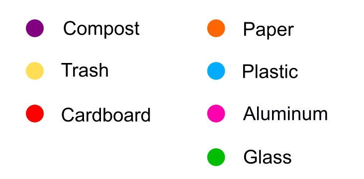

Nowadays, we keep hearing about how bad the current state of the environment is: global warming, the massive death of animals, air pollution and so on. The encouragement about reusing items or recylable materials has spread. Although we have been informed a lot about this issues on a large scale, and we thought we had enough motivation to make the world better, we have yet to act. There is one small piece of information that has not been discovered. The most realistic information than ever that would strongly change our behavior! Have you ever wondered? How much would a person's daily routine affect the environment? Or in another word, how much trash do you personally produce daily? Is it as much as you expect?
Each of us collected data of how much trash we produce for a week. The purpose of this experiment was to help us realize how much our daily routined produced trash and the effect of our trash contribution to the environment.
Everytime we discarded something, we took a picture and note about it. The information was what the item was, what it was made of, the discarded time, if it was recycled, and side note about why we used it. Each of us could took some other aspects into account regarding to our personal lives. For example, Maura differentiated the trash produced by her cat and herself; while Phuc focused on the amount of individual trash and if she did recycle it or not. The trash was categorized into 7 types: plastic, cardboard, paper, glass, aluminum, compost and trash.
Each leaf represents a category coded by color of the dot on the leaf tip. The flower is coded with the same concept by the color of the flower. Each flower represents a item that was put in the recycled bin. Each item which was thrown to trash can is illustrated by a hole on leaf as a caterpillar eats it.
Every action is driven from thought, but thought cannot solve the problem, only action can! Want to know more about the current status of the trash recycling in United State and wonder how you could lend a hand? You can do much more you would imagine. Please take a look on this infographic made by EPA - United States Environmental Protection Agency: "Together, we can make a difference."